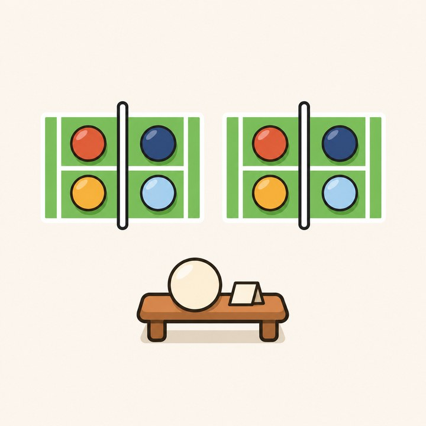

iPhone・iPad・Android の練習会のペア決め
休みは順番に。
同じペアは続かない。
バドミントン・テニス・卓球・ピックルボールのダブルスの練習会で、休みの回数をそろえ、同じ人が続けて休まず、同じペアと同じ相手がなるべく重ならないようにコートを振り分けます。9人・2コートを9回組むと、全員がちょうど1回ずつ休み、同じペアは1度も重なりません。
App Store・Google Play で配信予定買い切りで全部の機能が使え、名簿の人数にも制限はありません。アプリ内課金・サブスクリプション・広告はありません。

こんな困りごとのために
同じペアばかり
これまでのペアと相手の回数を数えて、重なりの少ない組み合わせを選びます。
連続で休む人が出る
前の回に休んだ人は、次の回は必ず出ます（休む人が半分をこえるときを除く）。
途中参加で休みが偏る
途中で来た人は、休みの回数をみんなの平均にそろえて入ります。
閉じると消える・機種変更で入れ直し
閉じても続きから。名簿は CSV で書き出し・読みこみ。
性別が勝手に変わる
入れたままにします。男ダブ・女ダブ・ミックスも。
レベルが相手に見えるのは失礼
レベルを画面に出さない設定があります。
できること
| 組む | コート 1〜20 面・ばらばら／レベルをそろえる／男女・固定のペア・休みの人・途中参加と早退 |
|---|---|
| 進め方 | みんなそろって交代・終わったコートから順に |
| 見せる | コートごとのペアを大きく・iPad の横・回を画像で共有 |
| データ | 出た回数・休んだ回数・組んだ相手の数・名簿の CSV・iCloud Drive の毎日の控え |
使い方・プライバシーポリシー・利用規約もご覧ください。